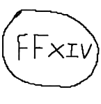
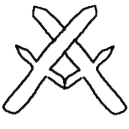

FFXIV
Final Fantasy 14 is a MMORPG game where the game is based on the already established Final Fantasy Franchise. In this game, you get to choose what race or species that your character is. You must farm mobs and bosses and do quests to level yourself up. You can party up with people you know or strangers to take on raids that will grant rewards upon completion.

source: The Tank Club
World of Warcraft
Like the previously mentioned game. World of Warcraft is a MMORPG game. It lets you select your race and what kind of faction you want to be in. The game is set in the already established Warcraft series. The classes vary from Monk to classes like Paladin or Druid. The game uses subscription to keep itself alive and running. What that means is that you are going to have to pay money to keep playing the game for lets the a month. But thats usually for all MMORPG games that are still around today.

source: Wikipedia
RuneScape
RuneScape is a MMORPG that is similar to others games that have already been mentioned. RuneScape is in world of Gielinor, where there are many factions each with different alignments and purposes. The player are all humans and will have to find their own class to become by leveling up their skills. They are taken to a tutorial island, where they will be taught how to play the game and so forth.
source: MMORPG Review